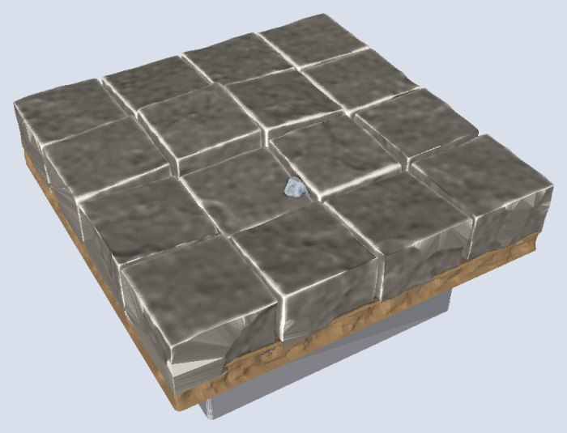
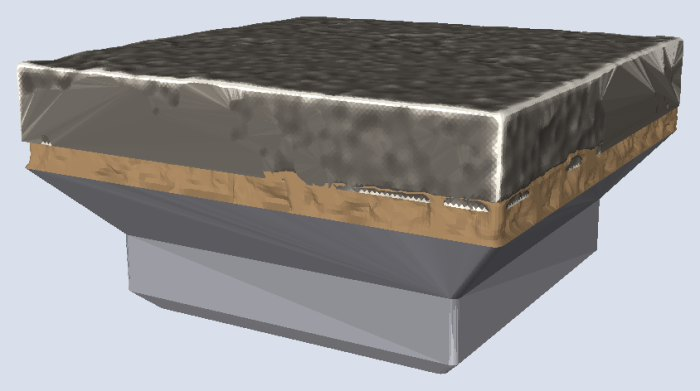

Writing it
dharmatiles version="1.0.0"
tile size="1x1" seed=72 {
stack {
base
dirt
flagstones texture=chipped seed=22
wall at="north" style=cut-stone seed=23 // stands on the slabs
}
}A wall on a floor seats on the pavement; its top stays at the wall-top level. The dirt under the slabs is what shows through a missing slab.
A wide band heaves the floor. Here sixteen slabs each take a height and a tilt in a band 3dmm wide, and the slabs on the edge stay at the edge height:
flagstones slabs=4 top="[$floorHeight - 1.5dmm .. $floorHeight + 1.5dmm]"
demo/flagstones-heaved.dtile.Reference
at= regionControls
| Control | Takes | Default | What it does |
|---|---|---|---|
style | word | cut-stone | cut slabs, or drystone flagstones
|
texture | word | dressed | surface finish of each slab
|
slabs | count, 1 to 6 | 1 | slabs across one square |
In the library
1x1-floor-stone-wall.dtilelib:tiles/floors/1x1-floor-stone-wall.dtile1x1-floor-stone.dtilelib:tiles/floors/1x1-floor-stone.dtile
Generated from dharmatiles elements flagstones by cargo xtask docs.
Rules
What this element always does. A change to one of these is a change to the element.
- A floor is a pieces body of the stack:
top=says how high it may be, as a band (a height, or a range[low .. high]),pinlines hold the band to a height at a place, andat=names the region it fills. It starts with the top$floorHeightand a pin atedgesat$floorEdgeHeight, flush with the edge. A floor's pins step: nothing eases between a pin and the band beside it. See pin, let and heights. - A cloud top (
$floorHeight + high(-1dmm .. 0dmm)) sets the odds of the heights: the heaved surface the pieces take their height and tilt from is rolled by rank under the weighting, so most are level and a few sunk (Clouds). - Each piece is made to fit the band as it is made: its height and tilt are drawn from a heaved surface inside the band, then held inside the band over every node it stands on, and the finished piece is checked against the band. Nothing is trimmed afterwards. A single height is a flat floor, a wide band a heaved one.
- A piece that misses its band is a bug the build refuses (
dt::band). Where a pin's edge falls inside one piece the band jumps across it and the build is refused: put the pin's edge on the edge of a piece. - The grain is the piece's own and never rises above the band's top: the highest of it reaches the band, and the rest lies under it.
- Its pieces stand on what is below: they reach down to the lowest land under the floor, or to zero, the base, where there is none. The floor's surface is the higher of what is below and its own top, inside its region.
- A floor meets the tile edge flush at
$floorEdgeHeight,7.4dmm, with no edge-round, so two floor tiles meet with no step. Its faces at the plane keep the material’s grain and never pass it: a cut-stone slab or a board stands a hair past the plane (0.05 to 0.1 mm) and is cut there, so its top edge is square and the chipped relief of its face lies at or just behind the plane; a drystone flag’s upper flank is drawn to the plane, its pillow shape kept inside. At least 15% of each face is within 0.1 mm of the plane, so neighbours touch. - Slabs are laid where their middle is inside the entry’s area. Some are missing (dark pits onto the earth), some spalled (broken corners).
- Weathered flagstones,
texture=worn, take a worn round of their own at the edge instead of the square cut: beside an unweathered floor tile they meet with a small groove. - Its slabs carry a texture made for drybrushing. Floors and walls share one stone engine.
Notes
The slabs share the wall’s stone finishes; how they are made is on the wall page. style=fieldstone lays a fieldstone wall’s stones flat, as flags; their rounded shoulders reach the edge height only near their highest points, so a drystone floor’s edge top is not as even as a cut-stone one.

Dirt laid on a floor lies on it like on any surface: see dirt.